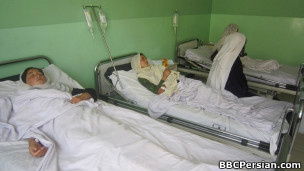

پذيرش > سایت نوشته ها > داستان دختران افغانی که فریاد می زنند، می گریند و می خندند


 داستان دختران افغانی که فریاد می زنند، می گریند و می خندند داستان دختران افغانی که فریاد می زنند، می گریند و می خندند
18 تیر 1390 - - نسخه قابل چاپ
دو اتاق در بیمارستان ابن سینای کابل شلوغ است و صدای داد و فریاد دو سه دختر ظاهرا هفده و هجده ساله در یکی از این اتاقها آرامش طبقه دوم بیمارستان را برهم زده است.
مادر و برادر جمیله دستان او را محکم گرفته اند، اما او به هر سو می غلتد، گاهی گریه می کند و لحظه ای فریاد می زند. دختر دیگری در تختی دیگر مانند جمیله همچنان ناآرام است.
یمار سوم هم یک دختر است که تازه کمی آرام شده و دارد به خواب می رود. خواهر، برادر، مادرش و چند تن دیگر در کنار تخت او نشسته و نگران وضع او هستند.
شش دختر دیگر هم در اتاق کناری بستری هستند.
سر درد شدید، ضعف، لرزه و ناراحتی عصبی، شکایت اصلی آنها است، ولی اعضای خانواده های آنها می گویند که این دختران زمانی که دچار "حمله" میشوند، گریه می کنند، می خندند، فریاد می زنند و به صورت غیرارادی از گذشته های خود صحبت می کنند.
این سه دختر دانش آموزان مدرسه دخترانه "میر آدینه" در ولسوالی مالستان غزنی، در جنوب افغانستان هستند که روز جمعه (۱۷ سرطان/تیر) به همراه ۱۷ دانش آموز مبتلا به همین بیماری برای درمان از غزنی به بیمارستان ابن سینای کابل منتقل شده اند.
روز سه شنبه گذشته (۱۴ سرطان) محمد نبی، مدیر اداره آموزش و پرورش مالستان به بی بی سی گفت که بیش از ۵۱ دانش آموز دختر در این مدرسه "مسموم" شده اند و دکتر خادم علی، پزشک درمانگاه مالستان گفت که این دختران در پی این مسمومیت دچار "اختلال سیستم عصبی" شده اند.
مسئولان درمانگاه مالستان به پدران و مادران این دانش آموزان گفتند که فرزندان آنها در این درمانگاه قابل درمان نیستند و بیماری آنها هم در آنجا تشخیص نخواهد شد. این دختران به بیمارستان شهر غزنی منتقل شدند، ولی مسئولان بیمارستان غزنی هم نتوانستند کاری انجام دهند.
بیست تن از این دانش آموزان در اثر مشورت پزشکان بیمارستان غزنی به کابل منتقل شدند و در بیمارستان ابن سینا تحت درمان قرار گرفتند.
دکتر رحمت الله، رئیس بیمارستان ابن سینای کابل گفت که حال یازده تن از دانش آموزان مالستانی خیلی زود خوب شد و از بیمارستان مرخص شدند، اما ۹ تن از آنها هنوز هم در این بیمارستان بستری هستند.
رئیس بیمارستان ابن سینا گفت که بیماری این دانش آموزان و دلیل ابتلای آنها به این بیماری هنوز مشخص نشده است، ولی ظاهرا نشانه های "مسمومیت" در آنها بیشتر دیده می شود.
به همین دلیل دکتران بیمارستان ابن سینا گفته اند که به دلیل عدم تشخیص نوع بیماری اقدامات آنها محدود است و در حال حاضر آنها تنها به تزریق سیروب اکتفا کرده اند.
شکیلا دانش، یکی از این دانش آموزان است. او داستان مبتلا شدن خود به این بیماری را چنین توضیح داد: "بعضی از دختران در مکتب بیمار شدند و بعضی دیگر در راه ها می افتادند. من خودم شخصا وقتی که به سوی خانه می رفتم، در راه افتادم هیچ نفهمیدم. سه ساعت بیهوش مانده بودم. بعد که به هوش آمدم، دیدم که در کلینیک هستم."
شکیلا افزود زمانی که او به مکتب رفت، در آن جا بوی بدی احساس کرد. به نظر او، شاید این بوی ناشی از موادی بوده که او را مبتلا به این بیماری کرده و او احتمال آلودگی آب چاه مکتب را که دانش آموزان از آن استفاده می کنند، هم بعید ندانست که باعث این بیماری شده باشد.
اما کارگر نوراوغلی، سخنگوی وزارت صحت (بهداشت) افغانستان گفته است که تلاشهای این وزارت برای تشخیص بیماری دانش آموزانی که در مناطق مختلف این کشور مانند دانش آموزان مالستانی بیمار شده اند، تا حال به نتیجه نرسیده است.
او گفت که در برخی موارد و از جمله بیماری دانش آموزانی که حدود یک ماه پیش در بامیان به صورت گروهی و همزمان بیمار شده بودند، تا چند هفته طول کشیده، ولی در کل چنین بیماری ها تلفاتی در پی نداشته و هنوز در آزمایش های خونی که انجام شده، مورد قابل نگرانی به نظر نرسیده است.
برخی از پزشکان در بیمارستان ابن سینا این احتمال را مطرح کرده اند که ممکن است این دختران به "هیستری گروهی" مبتلا شده باشند، اما اعضای خانواده های این دختران نسبت به این نظریه واکنش شدیدی نشان دادند.
خانواده های دانش آموزان بامیانی که آنها هم مانند دانش آموزان مالستانی در مدرسه و به صورت همزمان بیمار شده بودند، از سردردی، لرزه بدن، ناراحتی های عصبی و سفت شدن دست ها و پاها و گردن شکایت داشتند.
خانواده های آنها گفته اند که بیماری آنها هنوز هم پس از گذشت یک ماه به صورت حمله های پی هم دیده می شود. به گفته خانواده های آنها، این دختران در هنگام حمله گریه می کنند، گاهی فریاد می زنند یا به صورت غیرارادی خنده می کنند و از گذشته های خود صحبت می کنند.
بیشتر این عوارض در دو تن از دانش آموزان بیمار مالستانی بستری شده در بیمارستان ابن سینا هم دیده می شود. یکی از دانش آموزان گریه می کرد و به با صدای بلند فریاد می زد. دستها و سر خود را به تخت خواب می زد، اما اعضای خانواده او آنجا بودند و دست ها و سر او را گرفته بودند.
با این وضعیت، اعضای خانواده های این دانش آموزان به شدت نگران بودند و از گسترش این نگرانی در میان خانواده های دیگر دانش آموزان در مالستان هم سخن گفته اند.
این نگرانی با مبتلا شدن دانش آموزان دختر در چندین مورد در چند ولایت افغانستان در مدت دست کم سه سال اخیر، حالا به یک مساله جدی اجتماعی_امنیتی بدل شده است.
خانواده های این دانش آموزان در بیمارستان ابن سینا می گفتند اهالی ولسوالی مالستان از شیوع این بیماری در سطح کل ولسوالی نگران هستند و عدم تشخیص این بیماری و دلایل ابتلا به آن، آنها را روز به روز بیشتر نگران می کند.
بی بی سی
ارسال به
بالاترین
،
توییتر
،
فریندفید
،
فیسبوک
در همين بخش :
 یک خبر تلخ؟ یک قانونشکنی؟ یک تصمیم بخشنامهای جدید؟ یک خبر تلخ؟ یک قانونشکنی؟ یک تصمیم بخشنامهای جدید؟
چرا بایست به سکسوالیته پرداخت؟ / نفیسه آزاد
آزارجنسی خانگی؛ «قربانی» نه، «نجات یافته»
زنان، بزرگترین بازندگان بهار عرب
سانسور از دیدگاه جنسیتی/الهه امانی
ديگر بخش ها :
طرح یک میلیون امضا
|
مقالات
|
سایت نوشته ها
|
اخبار
|
گزارش كمپين
|
گفت و گو
|
علیه سکوت
|
كوچه به كوچه
|
نامه های شما
|
گزارش ویژه
|
گفتگو با اعضا
|
ویژه سالگرد کمپین
|
تصویر برابری
|
دل آرام علی
|
تریبون
|
مقالات
|
تاریخ شفاهی
|
خارج از چارچوب
|
کتابخانه
|
درباره کمپین
|
کمپین در شهرها
|
کمپین در بند
|
صدای تغییر
|
ویژه 22 خرداد
|
لایحه حمایت از خانواده
|
گالری
|
عشا مومنی
|
امیر یعقوبعلی
|
خدیجه مقدم
|
راحله عسگری زاده و نسیم خسروی
|
پروین اردلان،جلوه جواهری، مریم حسین خواه، ناهید کشاورز
|
زینب پیغمبرزاده
|
سعیده امین، سارا ایمانیان، محبوبه حسین زاده، ناهید کشاورز و همایون نامی
|
احترام شادفر
|
نسیم سرابندی زاده،فاطمه دهدشتی
|
وبلاگ مهمان
|
پرونده خرم آباد
|
دستگیری ها
|
مریم مالک
|
پرستو اللهیاری
|
مهرنوش اعتمادی
|
سمیه رشیدی
|
Other Languages
|
همراهان
|
«فراخوان کمپین ده روز با بهاره هدایت»
| English
|